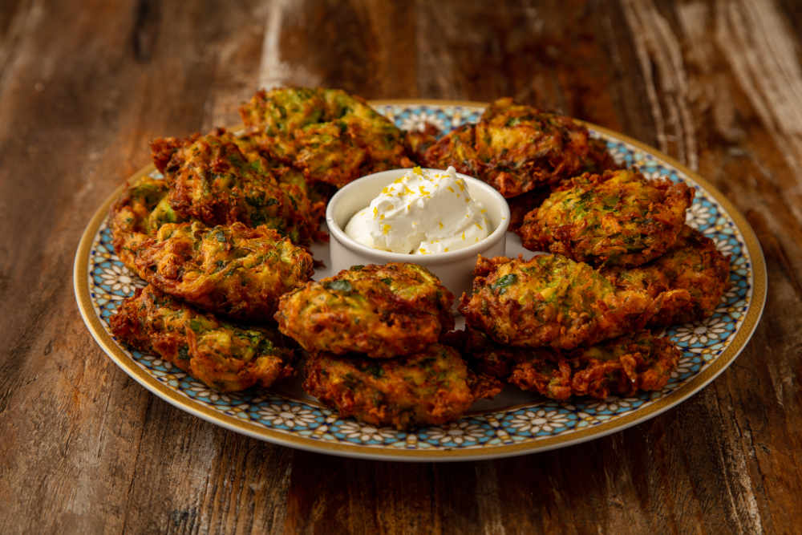

Kabak Mücveri Yemeği Tarifi İçin Malzemeler

~Tarifin Hikayesi~
4-6 Kişilik 10dk Hazırlık, 10dk Pişirme
Kahvaltılarınızda, çay saatlerinizde sıcak ya da soğuk olarak tüketebileceğiniz son derece doyurucu kabak mücveri tarifimi sizlerle paylaşıyorum. Kabak sevmeyenlere bile yedirtebileceğiniz lezzetli mücver tarifimi mutlaka denemelisiniz. Köfteyi anımsatan görüntüsü ile çocuklarınızın beğenisini kazanacak, pratikliği ile de sizin en çok tercih ettiğiniz kahvaltılık olacak. İçerisindeki yeşillikler ile adeta size görsel şölen yaşatacak. Hem karnınız hem de gözünüz doyacak.Yanına da 1 kase yoğurtla bandırarak yemekte ayrı bir lezzetli olacaktır. Tarifimi denemeyi ve defterinize eklemeyi unutmayın. Deneyeceklere şimdiden afiyet olsun. Gelelim şimdi kabak mücveri nasıl hazırlanır sorusunun cevabına. :)
Kabak Mücveri Yemeği İçin Malzemeler
- 3 adet yumurta
- 3 adet kabak
- Yarım su bardağı un
- 2-3 dal yeşil soğan
- Yarım demet maydanoz
- Bir tutam dereotu
- Tuz
- Karabiber
- Pul Biber
Kabak Mücveri Tarifi Nasıl Yapılır?
- İlk olarak mücver malzemelerini hazırlayalım. Kabakları soyarak rendenin iri kısmında rendeleyelim. Yeşil soğan, maydanoz ve dereotunu minik minik doğrayalım.
- Kabak Mücver harcını hazırlayalım. Yumurtaları derince bir kaba alalım.
- Üzerine un, pul biber, karabiber ve tuzu ilave edilerek pürüzsüz kıvam alana kadar çırpalım. Ardından suyunu iyice sıktığımız kabakları ve doğranmış dereotu, yeşil soğan ve maydanozu eklenerek karıştıralım. Mücver harcımız hazır.
- Mücveri tavada pişirelim. Teflon tavaya az miktarda sıvı yağ alalım, kabak karışımından bir kaşık dökelim, çevirerek kızartalım. Mücverlerin her iki yüzü de kızardıktan sonra havlu kağıt serilmiş tabağa alalım.
- Kabak mücveri servis edelim Mücverleri ister sıcak, isterseniz soğuk olarak servis edebilirsiniz
- Daha sonra havuç ilave edilir ve 2-3 dk hep birlikte kavrulması sağlanır.
Afiyet olsun 😍.